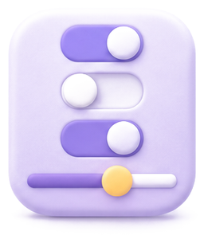

Ana sayfa
Öne Çıkan Araçlar
Tümünü GörAraçlar
Okulunun açtığı yapay zekâ araçları, seviyene göre ayarlı.
Bu aramayla eşleşen araç yok.
Ekosistem
Tek oturumla geçtiğin platformlar. Buradaki çalışmaların beceri haritanı besler.
Kendini Tanı
Ekosistemdeki çalışmaların Maarif Modeli’nin altı beceri alanına işlenir.
81genel beceri puanı
7. sınıf · 6 platform
7. sınıf · 6 platform
Öneri
Projelerim
Ürettiğin her şey burada; kaldığın yerden devam et.
Topluluk
Okulundaki arkadaşlarının paylaştığı çalışmalar.
Seni tanıyalım
Yaklaşık 3 dakika · cevapların yalnız öğretmeninle paylaşılır
EY
Elif Yılmaz
Öğrenci7-ADemo Okulları
24proje
81beceri puanı
6platform


Hesap ve güvenlik
- Hesabın aktif ve güvendeVerilerin uçtan uca şifrelenir.
- Son girişBugün 09:12 · bu cihaz

Tercihler
AaYazı boyutuTüm panelde geçerli
Çıkış yap